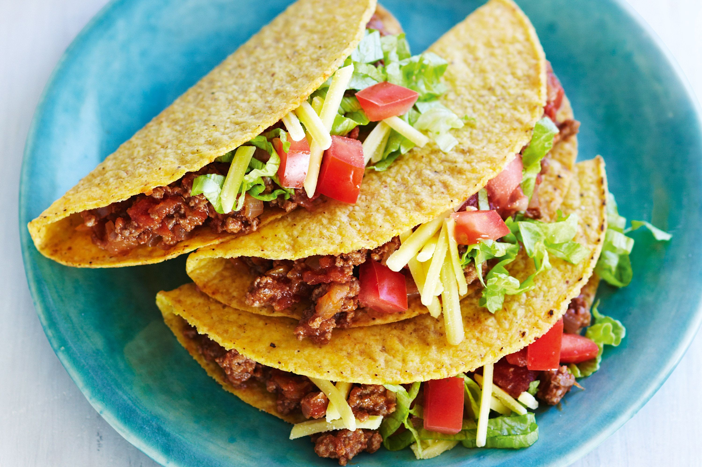

Taco
Ever wondered how to make simple ground beef tacos that are as good as the ones you enjoy at your local taqueria? This Easy Beef Tacos recipe is your answer. With just six ingredients and 30 minutes of your time, you can serve up ten delicious yet simple beef tacos. by Betty Crocker Kitchens Updated Nov 19, 2021
Ingredients 1 pound lean (at least 80%) ground beef, 1 cup Old El Paso™ Thick 'n Chunky salsa, 10 Old El Paso™ taco shells, 1/2 head lettuce, shredded, 1 medium tomato, chopped (3/4 cup), 1 cup shredded Cheddar cheese (4 ounces).
Steps1. Cook beef in 10-inch skillet over medium heat 8 to 10 minutes, stirring occasionally, until brown; drain.
2. Stir salsa into beef. Heat to boiling, stirring constantly; reduce heat to medium-low. Cook 5 minutes, stirring occasionally. Pour beef mixture into large serving bowl.
3. Heat taco shells as directed on package. Serve taco shells with beef mixture, lettuce, tomato and cheese. Tips from the Betty Crocker Kitchens
Tip 1: Create a small condiment bar to serve alongside your easy ground beef tacos: in addition to the lettuce, tomato and cheese, set out small bowls of chopped avocado, sliced radishes, sweet bell pepper, additional salsa and fresh cilantro.
Tip 2: Turn these Easy Beef Tacos into taco bowls by spooning the salsa-seasoned beef onto a bed of shredded lettuce, topped with the tomatoes and cheese. Sprinkle with crushed tortilla chips for added crunch.
Tip 3: Look for shredded Mexican cheese blends where you’d find the Cheddar cheese—they’re a mix of Cheddar, Monterey Jack, Colby, and sometimes a sprinkle of mild chili powder.
Tip 4: Try switching up this simple ground beef taco recipe by using ground chicken or ground turkey instead.